Célula cancerígena de mama, eletromicrografia de varredura.
Francis Crick Institute/Science Photo Library/Science Photo Library/Fotoarena
A Citologia (do grego, kytos e logos, que significam, respectivamente, “célula” e “ciência”) é o ramo da Biologia que se dedica ao estudo da morfologia, do desenvolvimento e das funções dos componentes celulares. Seu surgimento está diretamente associado à criação do microscópio.
Esse equipamento permitiu a ampliação e a observação de objetos invisíveis a olho nu com relativa nitidez. O aprimoramento dos microscópios e o seu uso para o estudo de estruturas biológicas possibilitaram a descoberta de estruturas que, hoje sabemos, compõem todos os seres vivos – as células.
Neste capítulo, serão apresentados o microscópio, a célula, os principais tipos celulares, suas semelhanças e diferenças estruturais, e os componentes que garantem o funcionamento celular e promovem a manutenção da vida dos organismos.
Como são as imagens resultantes de cada tipo de microscópio?
O que foi preciso para a primeira célula se formar?
Uma bactéria e uma girafa compartilham do mesmo tipo de estrutura celular?
Neste capítulo serão abordadas as habilidades
EM13CNT201,
EM13CNT208,
EM13CNT301 e
EM13CNT308.
Os microscópios e a Citologia
Não se sabe ao certo quem foi o inventor do microscópio, entretanto registros indicam que, em 1590, os holandeses fabricantes de óculos Johan e Zacharias Janssen, pai e filho, respectivamente, criaram um sistema de lentes de aumento que possibilitava observar, com relativa nitidez, pequenos objetos. Mas acredita-se que os Janssen tenham utilizado o aparelho apenas para observar estruturas não vivas. Por ter aperfeiçoado o equipamento, a invenção do microscópio é atribuída a Antonie van Leeuwenhoek, e acredita-se que ele tenha sido um dos primeiros a observar seres vivos.
Com o passar dos anos, as lentes e os equipamentos se tornaram cada vez mais refinados. Em 1665, o termo “célula” foi utilizado pela primeira vez por Robert Hooke. Essa denominação surgiu para descrever estruturas semelhantes à cortiça encontradas em alguns vegetais. Nessas estruturas, foram observados “poros microscópicos”, que lembravam as celas onde os monges se recolhiam – daí o nome “célula” ou “pequena cela”. O cientista inglês também observou e ilustrou vários outros organismos, como pulgas e piolhos.
Posteriormente, suas ilustrações e observações foram publicadas no que hoje se considera uma das mais importantes obras científicas de todos os tempos, o livro Micrographia (1665).
A teoria celular surge anos mais tarde, em 1839, quando os pesquisadores Matthias Schleiden e Theodor Schwann descreveram em seus respectivos trabalhos a presença de células em vegetais e animais. A partir daí, considera-se que as células são as unidades estruturais e fisiológicas básicas que compõem todos os seres vivos e os blocos de construção de organismos mais complexos.
Em 1931, a Citologia teve um grande avanço com a criação do microscópio eletrônico, que mostrou a imagem das estruturas de forma mais bem preservadae mais nítida.
Os tipos de microscópios
Certamente, você já se deparou com imagens que mostravam detalhes impressionantes de estruturas ou seres vivos microscópicos e se questionou sobre como foram obtidas. Pode até mesmo ter atribuído o crédito a programas de edição de imagem. Entretanto, grande parte da qualidade e do nível de detalhamento de uma imagem é decorrente do tipo de microscópio utilizado.
Podemos dividir os microscópios em dois principais tipos: os ópticos e os eletrônicos.
Microscópio óptico
Os microscópios ópticos, ou de luz, permitem aumentos de até 1 000 vezes com uma boa resolução e dependem de um ambiente intensamente iluminado caso não contenham uma lâmpada acoplada. Podem ser ainda classificados como simples – como a lupa – ou compostos –,que combinam sistemas de lentes.
De maneira geral, os microscópios compostos são divididos em duas partes: uma mecânica e outra óptica. A parte mecânica é constituída por uma base estabilizadora, uma coluna que se estende da base para cima, os parafusos de ajuste da imagem e um suporte chamado platina, sobre o qual se apoiam as preparações a serem observadas. Os componentes ópticos são as lentes oculares, as lentes objetivas, o condensador, o diafragma e a fonte de luz (lâmpada ou luz refletida).
Esses microscópios possuem um sistema de lentes: as oculares e as objetivas. As oculares se localizam na parte superior e é por onde o olho observa; já as objetivas ficam abaixo do revólver e próximo do material a ser observado. A ampliação total fornecida é obtida pela multiplicação da capacidade de ampliação das lentes oculares pela capacidade de ampliaçãodas lentes objetivas.
O condensador também é um conjunto de lentes. Porém, situa-se abaixo da platina, concentrando a luz emitida pela fonte na amostra que se observa. A entrada de luz no condensador é regulada pelo diafragma.
Partes de um microscópio óptico composto.
Aedka Studio/Shutterstock.com
Caminho da luz através das lentes de um microscópio óptico.
Microscópio eletrônico
Dependendo do material observado, os microscópios eletrônicos podem alcançar resoluções até 90 vezes maiores que as obtidas pelos ópticos, em consequência do emprego de feixes de elétrons em vez de luz. Esse aprimoramento garantiu grandes avanços científicos, tanto na Biologia como na Medicina.
Existem algumas variedades de microscópios eletrônicos, das quais destacamos: o microscópio eletrônico de varredura (MEV) e o microscópio eletrônico de transmissão (MET). O MEV é ideal para uma visualização das estruturas em sua forma tridimensional, enquanto o MET garante uma melhor resolução da imagem amplificada, desde que as amostras tenham espessuras muito delgadas.
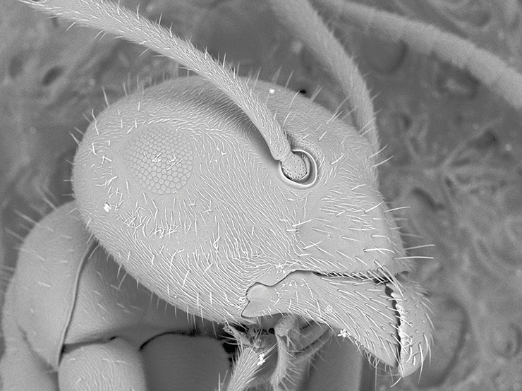
Micrografia da cabeça de uma formiga obtida por meio de um microscópio eletrônico de varredura (MEV).
lafayette-picture/Shutterstock.com
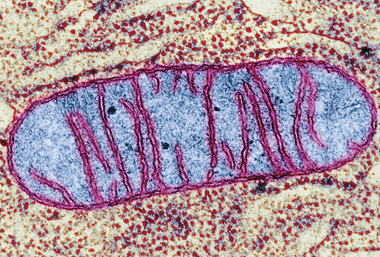
Cnri/Science Photo Library/Fotoarena
... as lentes que compõem os microscópios ópticos são amplamente estudadas pela Óptica que, de maneira simplificada, as classificam como lentes convergentes e divergentes. Os raios de luz que chegam às lentes sofrem refração, isto é, alteram sua velocidade de onda em consequência de sua passagem por entre diferentes meios.As lentes convergentes são assim chamadas, pois os raios de luz que chegam, após a refração, convergem em direção a um único ponto no eixo principal, chamado de foco F.
Esquema do caminho da luz em uma lente convergente.
Já nas lentes divergentes, os raios de luz refratados serão afastados do eixo principal, isto é, não se concentrarão em um mesmo ponto se mantidos afastados.
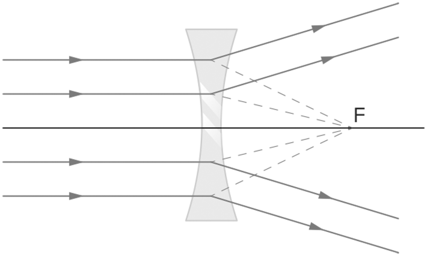
Esquema do caminho da luz em uma lente divergente.
Esse princípio de funcionamento das diferentes classes de lentes foi de extrema relevância para o processo de criação e desenvolvimento dos microscópios. O conjunto de lentes encontrado em tais equipamentos é caracterizado por lentes convergentes. Ambas as lentes, objetivas e oculares, apresentam uma pequena distância focal; entretanto, as oculares são um pouco menos convergentes que as objetivas e, por se disporem no foco do objeto, produzem a imagem final.
Questão resolvida
PUC-Minas Após a invenção do microscópio óptico de Antoine van Leeuwenhoek, diversos tipos de material biológico como espermatozoides de diversos animais, glóbulos vermelhos do sangue e uma grande variedade de seres microscópicos, como os protistas representados, puderam ser vistos e estudados quantoa sua morfologia.
O aprimoramento e utilização dos microscópios óticos possibilitaram, EXCETO:
determinar que todo ser vivo com metabolismo próprio é formado por uma ou mais células.
identificar agentes infecciosos como diversas bactérias e vírus.
relacionar alguns distúrbios genéticos com alterações observáveis ao microscópio.
classificar micro-organismos de acordo com padrões morfológicos.
Resposta
Resolução:Alternativa: B Os vírus foram identificados após a criação de microscópios eletrônicos, que possibilitaram observar estruturas microscópicas sob uma maior ampliação.
A origem das células
A célula é a unidade funcional que permite a interação entre seus componentes nos aspectos: fisiológico, bioquímico e reprodutivo.
Os processos bioquímicos essenciais dependem de um compartimento capaz de concentrar e permitir a interação entre as moléculas participantes de reações metabólicas, os processos de replicação e a polimerização.
Os lipídeos, quando em solução aquosa, tendem a se arranjar, por meio de interações hidrofóbicas, em estruturas organizadas e com características bem definidas. Os fosfolipídeos e sua estrutura característica com uma porção hidrofílica e outra hidrofóbica tendem a se agrupar em três formas: bicamada fosfolipídica, micela e lipossomo.
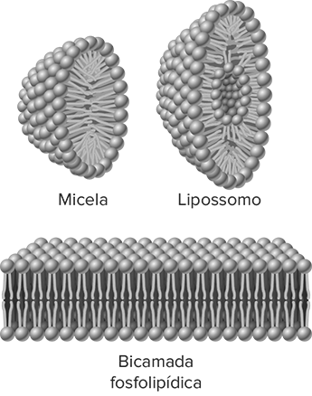
Estruturas formadas após arranjo de fosfolipídeos em solução aquosa.
As micelas são pequenas esferas resultantes das interações realizadas pela porção hidrofílica dos fosfolipídeos, que interagem com moléculas de água presentes ao redor, enquanto a porção hidrofóbica repele tais moléculas. Caso haja variações nas concentrações químicas ou mesmo no pH do meio, as micelas podem ser convertidas em membranas de camada simples ou dupla, como os lipossomos. Essa estruturação garante propriedades às membranas que delimitam as células.
Acredita-se que, de forma aleatória, durante o arranjo entre os fosfolipídeos, outras moléculas, como proteínas e ácidos nucleicos, tenham sido circundadas pela camada delgada e aquelas estruturas que, de alguma forma, eram dotadas de capacidade replicativa, isto é, produzir novas estruturas semelhantes, tenham tido vantagens sobre as demais e, portanto, passaram a ser predominantes no ambiente.
Gradualmente, a complexidade dessas estruturas foi aperfeiçoada até que se fossem constituídos os dois principais tipos celulares conhecidos atualmente: as células procarióticas e as eucarióticas.
Os tipos celulares
Organismos constituídos de células procarióticas são denominados procariontes, e aqueles formados por células eucarióticas são chamados de eucariontes.
Acredita-se que as células procarióticas tenham sido as primeiras a surgir, corroborando com a ideia de que os primeiros seres vivos eram compostos por uma única célula, portanto, unicelulares.
Esse tipo celular é bastante simples, delimitado por uma membrana plasmática que separa o meio externo do meio interno, onde se encontram presentes o material genético e os ribossomos. Atualmente, os organismos procariontes são exemplificados pelas bactérias e cianobactérias.
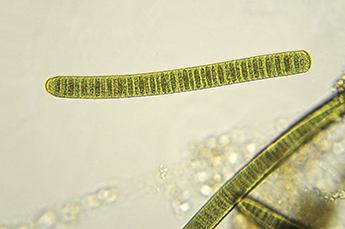
Oscilatória, exemplo de cianobactéria, cujas células que compõem o filamento são procarióticas.
NNehring/iStockphoto.com
As células eucarióticas, por sua vez, teriam se derivado de células procarióticas, que desenvolveram inúmeros dobramentos em sua membrana plasmática, contribuindo com o aumento do volume celular e a formação de estruturas especializadas, como as organelas membranosas e o envoltório nuclear, no qual se concentrou o material genético. Esse tipo celular compõe a maioria dos seres vivos entre fungos, protozoários, algas, animais e vegetais.
Ambos os tipos celulares compartilham quatro componentes fundamentais: a membrana plasmática, o citosol, os ribossomos e o material genético. Sucintamente, dizemos que a membrana plasmática é a estrutura responsável por delimitar o espaço intracelular e o extracelular, permitindo que haja troca de substâncias entre eles de forma seletiva. O citosol (ou hialoplasma ou citoplasma fundamental) preenche o espaço intracelular, sendo o local de ocorrência de inúmeras reações, já que é majoritariamente constituído de água, além de íons e algumas substâncias orgânicas. Ribossomos, por sua vez, são organelas responsáveis pela síntese de proteínas.
A macieira é constituída de células eucariontes.
Jan Martin Will/Shutterstock.com
Em um recife de corais, vivem vários seres eucariontes.
vlad61/iStockphoto.com
Citoplasma é o nome dado ao conteúdo de uma célula delimitado pela membrana plasmática. Nas células eucarióticas, é o que preenche o espaço entre a membrana plasmática e o envoltório nuclear.Citosol (ou hialoplasma) é a parte líquida do citoplasma composta, majoritariamente, por água, íons, proteínas e outras moléculas.
Estrutura da célula procariótica
Apesar dos componentes em comum, as estruturas celulares se diferenciam em alguns aspectos. A principal característica das células procarióticas (do grego protos e karion, que significam, respectivamente, "primitivo" e "núcleo") é a ausência de uma membrana interna que separe o material genético do restante do citoplasma, isto é, elas não possuem um núcleo individualizado. Além disso, não são dotadas de muitas organelas, apenas os ribossomos são encontrados dispersos no citoplasma. Apresentam uma membrana esquelética que recobre a membrana plasmática chamada parede celular; alguns organismos procariontes podem mostrar um envoltório externo denominado cápsula. A região interna na qual se concentra o material genético é denominadanucleoide.
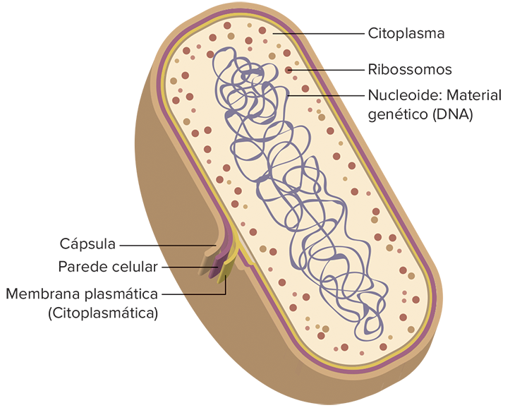
Representação esquemática da estrutura de uma célula procariótica.
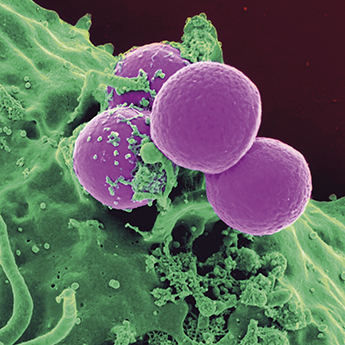
Agrupamento de células de Staphylococcus aureus, organismo procarionte responsável por causar inúmeras enfermidades desde infecções cutâneas a septicemias. Fotografia obtida por microscópio eletrônico de varredura. Tamanho de cada célula: 1 µm.
Ebrahim98/Shutterstock.com
Estrutura da célula eucariótica
Já nas células eucarióticas (do grego eu e karion, que significam, respectivamente, "verdadeiro" e "núcleo") o material genético é encontrado separado do restante da célula e envolto por uma membrana que organiza o núcleo celular, chamada de envoltório nuclear ou carioteca. Além do núcleo, encontra-se presente uma grande variedade de organelas membranosas dispersas pelo citoplasma.
As células eucarióticas são diferenciadas em dois tipos: animal e vegetal. Ao compararmos esses dois tipos celulares, notamos que grande parte das organelas são compartilhadas entre eles, tais como o citoesqueleto, o complexo golgiense, os retículos endoplasmáticos não granuloso (liso) e granuloso (rugoso), os ribossomos e as mitocôndrias. Entretanto, a parede celular recobrindo a membrana plasmática, os plastos e o vacúolo permitem caracterizar as células como células vegetais. Por sua vez, nas células animais, essas três estruturas estão ausentes e apresentam de modo exclusivo o centrossomo (ou seja, os centríolos mais o material pericentriolar) e os lisossomos.
Biophoto Associates/Science Source/Fotoarena
A. Planta aquática lentilha-d’água Spirodela oligorrhiza, com medida cerca de 5 mm, é um organismo composto de células vegetais eucariontes; B. Células de raiz da lentilha-d’água vistas em microscópio eletrônico de transmissão.
Thanakorn Hongphan/Shutterstock.com
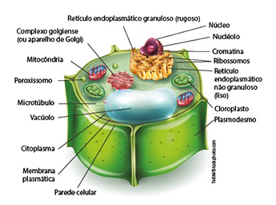
Representação esquemática da estrutura de uma célula vegetal.
TefiM/iStockphoto.com
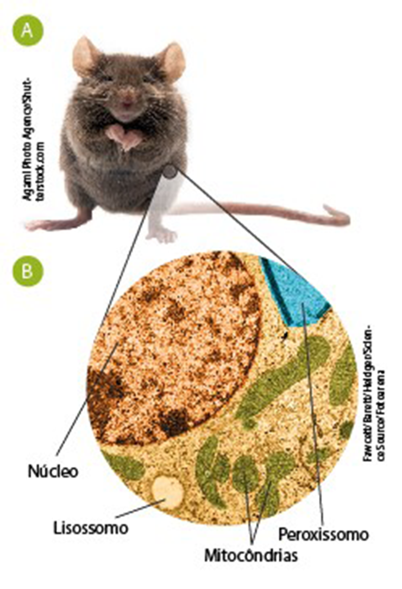
A. O camundongo Mus musculus, com medida de cerca de 15 cm, é um organismo formado por células eucariontes; B. Célula de rim de camundongo, vista em microscópio eletrônico de transmissão.
Fawcett/Barett/Heidger/Science Source/Fotoarena
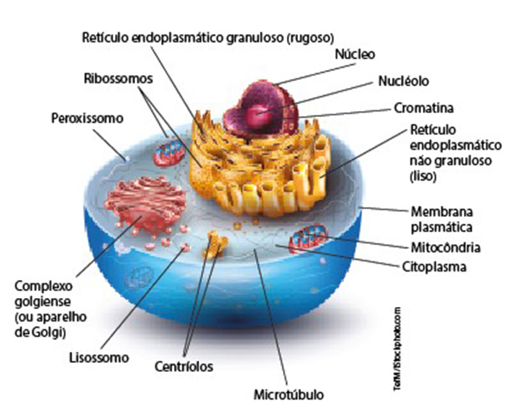
Representação esquemática da estrutura de uma célula animal.
TefiM/iStockphoto.com
Hipótese endossimbiótica
Acredita-se que a maioria das organelas presentes no interior das células eucarióticas tenha se originado das dobras sofridas pela membrana plasmática de uma célula procariótica primitiva. Essas dobras também garantiram a estruturação do compartimento nuclear.
Entretanto, algumas organelas podem ter tido uma origem diferente. Teorias apontam que os primeiros eucariontes teriam sido anaeróbios e heterótrofos, por essa razão englobavam os procariontes como forma de obter alimento. Essa teoria diz também que alguns desses organismos seriam capazes de sobreviver dentro da célula eucarionte sem serem digeridos. Concomitantemente, alguns desses procariontes se tornaram capazes de realizar o processo de respiração e, quando foram englobados por eucariontes, trouxeram benefícios a eles, isto é, energia sendo disponibilizada de maneira mais eficiente. Atualmente, defende-se que esses procariontes presentes no interior das células eucariontes foram os precursores das mitocôndrias. A relação estabelecida entre o eucarionte heterótrofo e o procarionte disponibilizador de energia é considerada uma simbiose.
Anos mais tarde, outra relação simbiótica foi estabelecida pelos eucariontes, mas, dessa vez, entre procariotos capazes de realizar fotossíntese, mais conhecidos como cianobactérias. A partir de então, alguns eucariontes se tornaram capazes de produzir matéria orgânica, e os procariontes englobados, hoje, são denominados cloroplastos.
Algumas evidências corroboram fortemente com essa hipótese, conhecida como hipótese endossimbiótica, e serão mais bem detalhadas no capítulo em que apresentaremos as organelas citoplasmáticas.
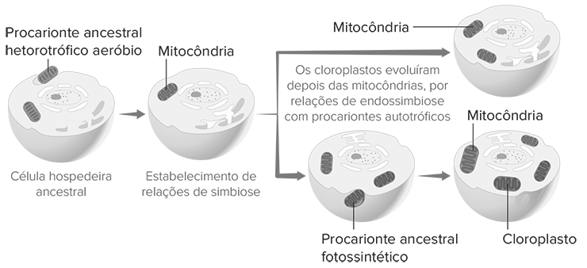
Esquema da hipótese endossimbiótica da origem das mitocôndrias e dos cloroplastos.
Aplicando conhecimentos
1
Qual a importância do desenvolvimento dos microscópios?
2
Quais as estruturas gerais de um microscópio óptico?
3
UFSCar-SP
Toda célula viva possui
membrana plasmática, mas pode não possuir núcleo e mitocôndrias.
membrana plasmática e mitocôndrias, mas pode não possuir núcleo.
núcleo, mas pode não possuir membrana plasmática e mitocôndrias.
minúcleo e mitocôndrias, mas pode não possuir membrana plasmática.
núcleo, membrana plasmática e mitocôndrias.
4
As células eucarióticas podem ser diferenciadas em dois tipos: animal e vegetal. Quais estruturas são encontradas, exclusivamente, em cada uma delas?
Consolidando saberes
1
Uema 2014
A construção do microscópio composto ou binocular por Robert Hooke, em 1663, permitiu a visualização de estruturas até então desconhecidas pelos cientistas, a partir da utilização de lentes de grande aumento. Com o advento da microscopia, os pesquisadores, após vários estudos em muitos tipos de plantas e animais, lançaram a ideia de que todos os seres vivos são formados por pequenas unidades chamadas células. Essa constatação foi possível graças à possibilidade gerada pela combinação de duas partes (A e C) do microscópio ótico.O sistema de lentes A e C, responsável pelo aumento final de uma célula, é chamado, respectivamente, de
diafragma e condensador.
objetiva e condensador.
condensador e ocular.
ocular e diafragma.
ocular e objetiva.
2
Udesc 2017
Várias substâncias, moléculas e estruturas estão presentes nos seres vivos. Ao se analisar esses seres vivos, podem-se encontrar algumas estruturas comuns às bactérias, às células vegetais e às animais.Assinale a alternativa correta, em relação à informação.
Mitocôndrias, retículo endoplasmático, parede celular e ribossomos.
DNA, RNA, membrana citoplasmática e ribossomos.
Retículo endoplasmático, complexo golgiense, lisossomos e peroxissomos.
Vacúolos, plastos, ribossomos e membrana citoplasmática.
Carioteca, mitocôndria, ribossomos e lisossomos.
3
Uece 2017
A teoria celular proposta por Schleiden e Schwann afirmava que:
toda célula provém de uma célula preexistente.
todas as células vivas têm núcleo individualizado.
há estreita relação entre forma e função nas células.
células embrionárias multiplicam-se por mitose.
vegetais e animais são constituídos por células.
Imagem para as questões 4 e 5.Fonte: http://mewarnai.us/images/417399-animalcell-diagram.png
4
OBB 2015
Assinale a alternativa que indica corretamente o nome e uma função de uma das estruturas apontadas na figura:
e – complexo golgiense – secreção celular.
c – retículo endoplasmático rugoso – síntese de proteínas.
d – ribossomo – síntese de esteroides.
g – carioteca – centro de formação de cílios e flagelos.
h – nucléolo – centro de controle celular.
5
OBB 2015
Alguns herbicidas inibem a formação de membranas. Identifique a alternativa abaixo que contém estrutura que NÃO seria afetada por estas substâncias:
a
b
c
e
f
6
FGV-SP-2018
As células procariontes e as células eucariontes diferenciam-se e assemelham-se em diversos aspectos, como, por exemplo, quanto à presença de membranas internas, constituindo as organelas e o envoltório nuclear, e quanto à constituição dos envoltórios membranosos. Assinale a alternativa que cita, correta e respectivamente, uma diferença e uma semelhança relacionadas às membranas das células procariontes e eucariontes.
Mitocôndrias com membranas internas e externas nas células eucariontes; e constituição de dupla camada lipoproteica nas membranas de ambas as células.
Ribossomos com membranas simples nas células procariontes; e constituição de glicoproteínas e glicolipídios nas membranas de ambas as células.
Cloroplastos com clorofila imersa nas membranas internas nas células eucariontes; e constituição de dupla camada celulósica nas membranas de ambas as células.
Lisossomos contendo enzimas digestivas nas células procariontes; e constituição de dupla camada proteica nas membranas de ambas as células.
Ribossomos aderidos às membranas do retículo rugoso nas células eucariontes; e constituição de polissacarídeos nas membranas de ambas as células.